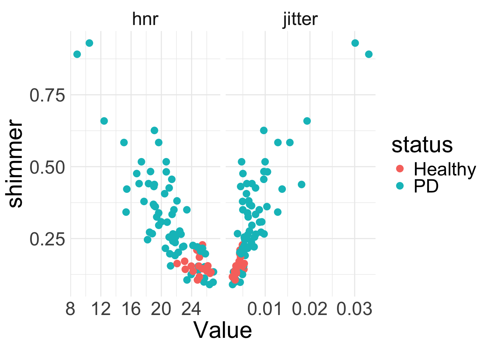
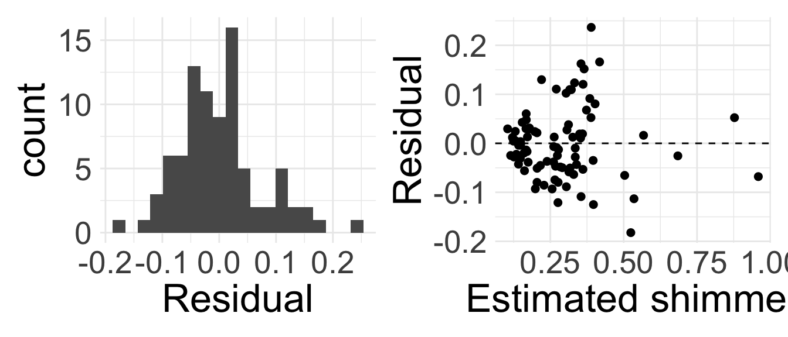

Rows: 195 Columns: 6
── Column specification ────────────────────────────────────────────────────────
Delimiter: ","
chr (2): clip, status
dbl (4): jitter, shimmer, hnr, avg.f.q
ℹ Use `spec()` to retrieve the full column specification for this data.
ℹ Specify the column types or set `show_col_types = FALSE` to quiet this message.Introduction to Multiple Linear Regression
Housekeeping
- Study for midterm!
- Today’s content will not be assessed on midterm, but might be useful for your final project and future coursework!
Voice shimmer and jitter data
Recall the data from a previous problem set about voice jitter and shimmer among patients with and without Parkinson’s Disease (PD).
The variables in the dataset are as follows:
clip: ID of the recordingjitter: a measure of variation in fundamental frequencyshimmer: a measure of variation in amplitudehnr: a ratio of total components vs. noise in the voice recordingstatus: PD vs. Healthyavg.f.q: 1, 2, or 3, corresponding to average vocal fundamental frequency (1 = low, 2 = mid, 3 = high)
Analysis goal
Want to understand what might help explain the voice shimmer of a patient with low vocal fundamental frequency.

What do you notice about how
shimmerrelates tohnr,jitter, andstatus?- Can we somehow incorporate all the predictors into the same model for
shimmer? Do you think we need to?
Multiple linear regression
Multiple linear regression
We have seen simple linear regression, where we had one explanatory variable
Extend to include multiple explanatory variables
- Seems natural: usually several factors affect behavior of phenomena
Multiple linear regression takes the form: \[y = \beta_{0} + \beta_{1} x_{1} + \beta_{2} x_{2} + \ldots + \beta_{p} x_{p} + \epsilon\]
Now there are \(p\) different explanatory variables \(x_{1},\ldots, x_{p}\) per observation
Still one response \(y\) and error \(\epsilon\) per observation
Represents a holistic approach for modeling all of the variables simultaneously
PD data (cont.)
Let’s start off by building a model that does not include status, as the EDA didn’t seem to show a strong relationship between status and shimmer.
Our multiple linear regression model is:
\[\text{shimmer} = \beta_{0} + \beta_{1} \text{hnr} + \beta_{2} \text{jitter} + \epsilon\]
Just as in the case of SLR, the estimates of \(\beta_{0}, \beta_{1}, \beta_{2}\) parameters are chosen via the least squares criterion
Multiple regression in R
Very easy to code:
shimmer_lm <- lm(shimmer ~ hnr + jitter, data = pd)
tidy(shimmer_lm)| term | estimate | std.error | statistic | p.value |
|---|---|---|---|---|
| (Intercept) | 0.732 | 0.091 | 8.022 | 0.0000000 |
| hnr | -0.025 | 0.004 | -7.066 | 0.0000000 |
| jitter | 13.467 | 2.574 | 5.232 | 0.0000012 |
Simply identify the estimated coefficients from the output to obtain fitted model
Try writing down the fitted model
\[ \begin{align*} \widehat{\text{shimmer}} &= 0.732 -0.025 \text{hnr}+ 13.467 \text{jitter} \end{align*} \]
Interpretation of intercept
- Interpretation of the estimated intercept \(b_{0}\) in MLR is very similar to SLR!
\[ \begin{align*} \widehat{\text{shimmer}} &= 0.732 -0.025 \text{hnr} + 13.467 \text{jitter} \end{align*} \]
Try interpreting the intercept!
We simply plug in 0 for all the explanatory variables
- The estimated voice shimmer of a patient with 0 hnr and 0 voice jitter is 0.732.
Interpretation of non-intercept
When we have more than one predictor variable, interpretation of the coefficients requires a bit of care
- Multiple moving parts
Interpretation of a particular non-intercept coefficient \(b_{k}\) relies on “holding the other variables fixed/constant” (assuming the model is appropriate)
\[ \begin{align*} \widehat{\text{shimmer}} &= 0.732 -0.025 \text{hnr} + 13.467 \text{jitter} \end{align*} \]
For every one unit increase in a person’s HNR, their voice shimmer is expected/estimated to \(\color{orange}{\text{decrease by } 0.025}\), holding their voice jitter value constant
Interpret the coefficient associated with jitter
Interpretation of non-intercept (cont.)
\[ \begin{align*} \widehat{\text{shimmer}} &= 0.732 -0.025 \text{hnr} + 13.467 \text{jitter} \end{align*} \]
- For every one unit increase in a patient’s voice jitter, their voice shimmer is expected to \(\color{orange}{\text{increase by } 13.467}\) units, holding their HNR value constant
More isn’t always better
You might be tempted to throw in all available predictors into your model! Don’t fall into temptation!
Quality over quantity
For SLR, we used the coefficient of determination \(R^2\) to assess how good the model was
\(R^2\) is less helpful when there are many variables
Why? The \(R^2\) will never decrease (and will almost always increase) when we include an additional predictor
Adjusted \(R^2\)
For multiple linear regression, we use the adjusted \(R^2\) to assess the quality of model fit
“Adjusted” for the presence of additional predictors
Take STAT 211 to learn the formula and intuition behind it!
Adjusted \(R^2\) is always less than \(R^2\), and doesn’t have a nice interpretation
When choosing between models, one method is to choose the one with highest adjusted \(R^2\)
Adjusted \(R^2\) (cont.)
summary(shimmer_lm)
Call:
lm(formula = shimmer ~ hnr + jitter, data = pd)
Residuals:
Min 1Q Median 3Q Max
-0.182276 -0.047886 -0.007739 0.029861 0.236647
Coefficients:
Estimate Std. Error t value Pr(>|t|)
(Intercept) 0.732203 0.091279 8.022 0.00000000000589 ***
hnr -0.024795 0.003509 -7.066 0.00000000045372 ***
jitter 13.466902 2.573728 5.232 0.00000123460798 ***
---
Signif. codes: 0 '***' 0.001 '**' 0.01 '*' 0.05 '.' 0.1 ' ' 1
Residual standard error: 0.07437 on 83 degrees of freedom
Multiple R-squared: 0.807, Adjusted R-squared: 0.8024
F-statistic: 173.5 on 2 and 83 DF, p-value: < 0.00000000000000022glance(shimmer_lm)| r.squared | adj.r.squared | sigma | statistic | p.value | df | logLik | AIC | BIC | deviance | df.residual | nobs |
|---|---|---|---|---|---|---|---|---|---|---|---|
| 0.807 | 0.8024 | 0.0744 | 173.5385 | 0 | 2 | 102.9875 | -197.975 | -188.1576 | 0.4591 | 83 | 86 |
Conditions for inference
We still need LINE to hold
Linearity: harder to assess now that multiple predictors are involved. Good idea to make several scatter plots
Independence: same as before
Nearly normal residuals: same as before
Equal variance: residual plot has fitted values \(\hat{y}\) on the x-axis

Inference in MLR
Hypothesis testing in MLR
In MLR, we are interested in the effect of each predictor variable on the response \(y\).
- Need to account for presence of other predictors in the model
\(H_{0}: \beta_{k} = 0\), given other predictors in the model
\(H_{A}: \beta_{k} \neq 0\), given other predictors in the model (or \(>, <\))
We can write down one null hypothesis for each coefficient in the model
Hypothesis tests from lm()
\[\text{shimmer} = \beta_{0} + \beta_{1} \text{hnr} + \beta_{2} \text{jitter} + \epsilon\]
We can test the following null hypotheses (no need to write down):
- \(H_{0}: \beta_{1} = 0\), given jitter is included in the model
- i.e. HNR has no effect on shimmer once we account for jitter
- \(H_{0}: \beta_{2} = 0\), given HNR is included in the model
Hypothesis tests from lm()
| term | estimate | std.error | statistic | p.value |
|---|---|---|---|---|
| (Intercept) | 0.73 | 0.091 | 8.022 | 0.0000000 |
| hnr | -0.02 | 0.004 | -7.066 | 0.0000000 |
| jitter | 13.47 | 2.574 | 5.232 | 0.0000012 |
Output from
lm()provides:Test statistic, which follows \(t_{n-p}\) where \(p =\) total number of unknown parameters (i.e. \(\beta\) terms)
p-values for testing two-sided \(H_{A}\) provided
Based on the model fit, which variables seem to be important predictors of voice shimmer? Why?
Hypothesis tests from lm() (cont.)
| term | estimate | std.error | statistic | p.value |
|---|---|---|---|---|
| (Intercept) | 0.732 | 0.091 | 8.022 | 0.0000000 |
| hnr | -0.025 | 0.004 | -7.066 | 0.0000000 |
| jitter | 13.467 | 2.574 | 5.232 | 0.0000012 |
HNR does seem to be an important predictor for voice shimmer, even when including jitter in the model
- Low p-value suggests it would be extremely unlikely to see data that produce \(b_{1} = -0.025\) if the true relationship between shimmer and HNR was non-existent (i.e., if \(\beta_{1} = 0\)) and the model also included jitter
Jitter does seem to be an important predictor, even when including HNR in the model
More complex model
Let’s see a model that now includes the status of the patient as a predictor:
shimmer_lm2 <- lm(shimmer ~ hnr + jitter + status, data = pd)
tidy(shimmer_lm2)| term | estimate | std.error | statistic | p.value |
|---|---|---|---|---|
| (Intercept) | 0.688 | 0.103 | 6.668 | 0.0000000 |
| hnr | -0.024 | 0.004 | -6.273 | 0.0000000 |
| jitter | 13.662 | 2.585 | 5.285 | 0.0000010 |
| statusPD | 0.020 | 0.022 | 0.915 | 0.3628131 |
- Remember,
statusis categorical with two levels.lm()converted to indicator variable for us:statusPD = 1whenstatus = "PD"
Write out the fitted model.
Interpretation with categorical variable
\[ \widehat{\text{shimmer}} = 0.688 -0.024 \text{hnr} + 13.662 \text{jitter} + 0.02 \text{statusPD} \]
Try interpreting the intercept here!
What does it mean for the explanatory variables to be 0? It means
hnr = 0,jitter = 0, and the patient does not havePD- A “healthy” patient with HNR and jitter values of 0 is estimated to have a voice shimmer of 0.688
Interpretation of slope coefficients
\[ \widehat{shimmer} = 0.688 -0.024 \text{hnr} + 13.662 \text{jitter} + 0.02 \text{statusPD} \]
Try interpreting the coefficients of hnr, jitter, and statusPD. Remember the special wording/acknowledgement now that we are in MLR world!
Coefficient for
hnr: for every one unit increase in HNR, we expect the patient’s shimmer to decrease by 0.024 units, holding the other variables (jitter and status) constant.Coefficient for
jitter: for every one unit increase in jitter, we expect the patient’s shimmer to increase by 13.662 units, holding the other variables constant.Coefficient for
statusPD: patients with PD are estimated to have a voice shimmer 0.02 units higher than patients without PD, holding the other variables constant
Effect of status
| term | estimate | std.error | statistic | p.value |
|---|---|---|---|---|
| (Intercept) | 0.688 | 0.103 | 6.668 | 0.0000000 |
| hnr | -0.024 | 0.004 | -6.273 | 0.0000000 |
| jitter | 13.662 | 2.585 | 5.285 | 0.0000010 |
| statusPD | 0.020 | 0.022 | 0.915 | 0.3628131 |
Based off the model output, does it appear that status is an important predictor of a patient’s voice shimmer? Why or why not? What about the other two variables hnr and jitter?
Comparing models
Let’s compare the two models:
tidy(shimmer_lm) |>
select(term, estimate, p.value)| term | estimate | p.value |
|---|---|---|
| (Intercept) | 0.732 | 0.000000 |
| hnr | -0.025 | 0.000000 |
| jitter | 13.467 | 0.000001 |
glance(shimmer_lm)| r.squared | adj.r.squared | sigma | statistic | p.value | df | logLik | AIC | BIC | deviance | df.residual | nobs |
|---|---|---|---|---|---|---|---|---|---|---|---|
| 0.807 | 0.8024 | 0.0744 | 173.5385 | 0 | 2 | 102.9875 | -197.975 | -188.1576 | 0.4591 | 83 | 86 |
tidy(shimmer_lm2) |>
select(term, estimate, p.value)| term | estimate | p.value |
|---|---|---|
| (Intercept) | 0.688 | 0.000000 |
| hnr | -0.024 | 0.000000 |
| jitter | 13.662 | 0.000001 |
| statusPD | 0.020 | 0.362813 |
glance(shimmer_lm2)| r.squared | adj.r.squared | sigma | statistic | p.value | df | logLik | AIC | BIC | deviance | df.residual | nobs |
|---|---|---|---|---|---|---|---|---|---|---|---|
| 0.809 | 0.802 | 0.0744 | 115.7449 | 0 | 3 | 103.4244 | -196.8488 | -184.5771 | 0.4544 | 82 | 86 |
What do you notice about the estimated coefficients, \(R^2\), and adjusted \(R^2\) across the two models?
Remarks
We have only scratched the surface of MLR
Things to consider (beyond our course):
Multicollinearity (when the predictor variables are correlated with each other)
Model selection
More than one categorical variable
Interaction effects